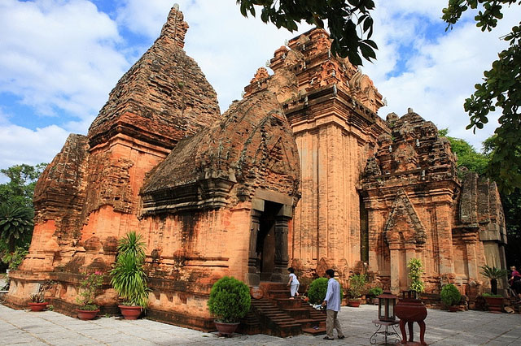

Vinpearl Land Nha Trang – Thiên đường vui chơi giải trí đẳng cấp quốc tế – tọa lạc ngay bên bờ một trong 29 vịnh đảo đẹp nhất thế giới. Cho dù bạn muốn hưởng tuần trăng mật, cùng gia đình tham gia những trò chơi thú vị, thư giãn trên bãi biển hay thậm chí thử sức với các trò chơi cảm giác mạnh độc lạ nhất hiện nay, Vinpearl Land Nha Trang sẽ đáp ứng tất cả.
Tháp Bà Ponagar Nha Trang được coi là danh thắng bậc nhất của Nha Trang – Khánh Hoà, tháp bà Ponagar là một quần thể đền thờ tiêu biểu của nghệ thuật kiến trúc và điêu khắc dân tộc Chăm. Tháp nằm trên một ngọn đồi nhỏ, còn gọi là núi Tháp Bà nơi cửa sông Cái, bên quốc lộ 1A, thuộc phường Vĩnh Phước, phía bắc thành phố Nha Trang. Do nằm ngay trong trung tâm thành phố biển Nha Trang xinh đẹp nên hầy hết du khách đều thăm quan và chiêm ngưỡng công trình kiến trúc độc đáo này… Tổng thể kiến trúc của tháp Bà Ponagar gồm có 3 tầng. Tầng thấp: Ngang mặt đất bằng là ngôi tháp cổng mà nay không còn nữa. Từ đấy có những bậc thang bằng đá dẫn lên tầng giữa, nơi hiện chỉ còn hai dãy cột chính bằng gạch hình bát giác, mỗi bên 5 cột có đường kính hơn 1 mét và cao hơn 3 mét. Ở hai bên các dãy cột lớn có 12 cột nhỏ và thấp hơn, tất cả lại nằm trên một nền bằng gạch cao hơn 1 mét. Tầng trên cùng là nơi các tháp được xây dựng, ngay trước mặt ngôi tháp chính. Tháp Bà Ponagar dùng để chỉ chung quần thể đền tháp này nhưng thực ra nó chỉ là tên gọi của ngọn tháp lớn nhất, cao khoảng 23m.
